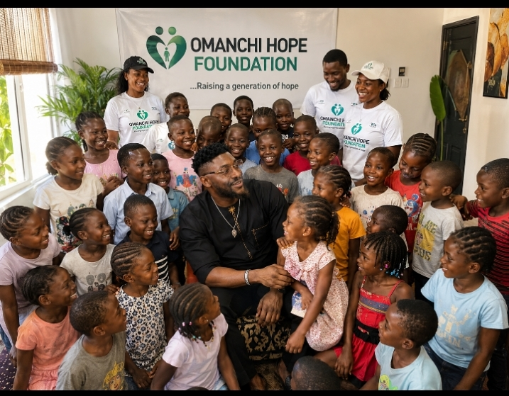
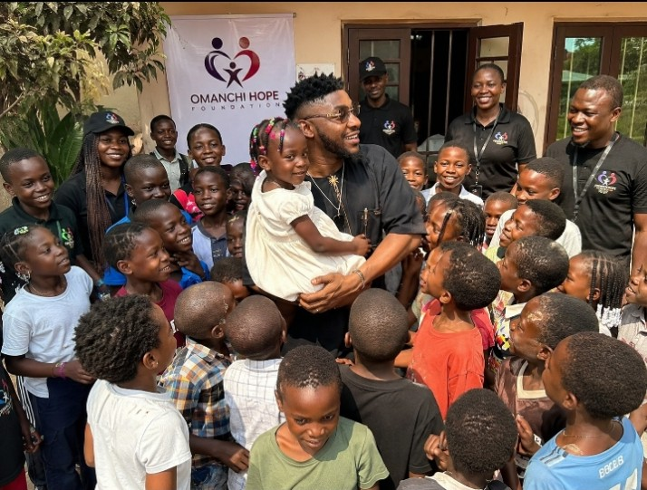
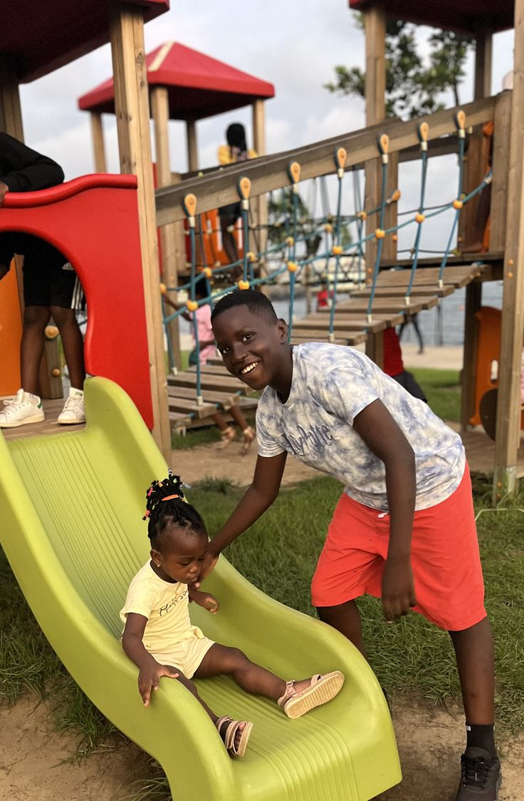
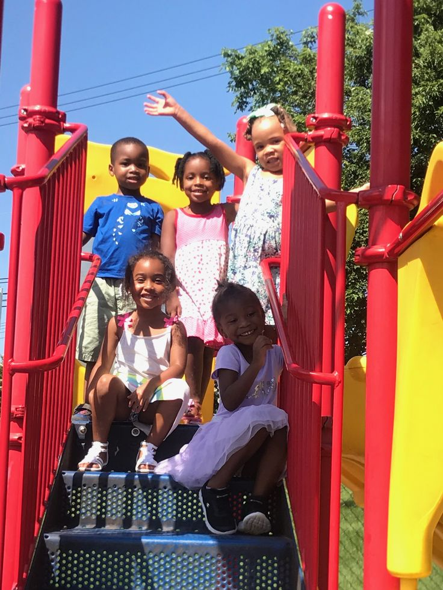
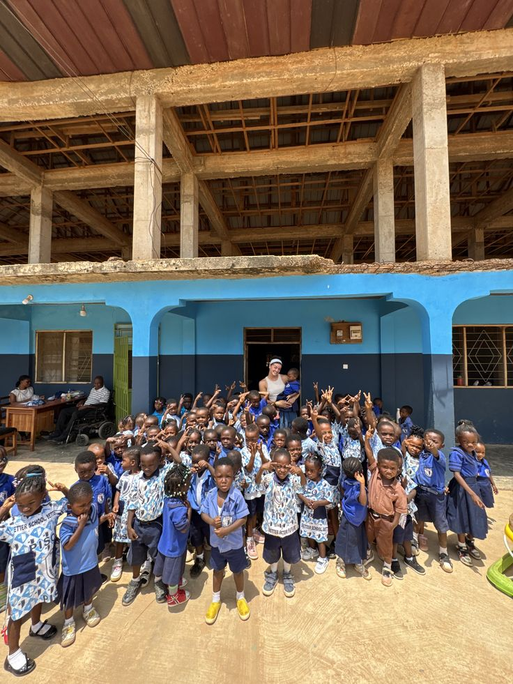

A humanitarian movement committed to uplifting vulnerable children, rebuilding struggling communities, and restoring dignity through compassion, outreach, education, and long-term support initiatives.
Support Now
Dr. Omanchi Samuel, PhD (Industrial Agriculture), is a Nigerian man, originating from the Idoma tribe in Otukpo, Benue State. The foundation started as a vision laid in his heart from his youth years.
At Omanchi Hope Foundation, our mission goes beyond temporary assistance.
We are committed to restoring dignity, rebuilding hope, and creating opportunities
for orphaned and less privileged children and families who have been forgotten by society.
Every child deserves the right to dream, to learn, to feel loved,
and to believe that their future can be better than their present.
Sadly, many children grow up surrounded by poverty, rejection, hunger,
and hopelessness without anyone willing to stand for them.
This is why we exist.
Through educational support, humanitarian outreach, emotional care,
community assistance, and empowerment initiatives, we strive to break
the cycle of poverty and give vulnerable children a genuine chance at life.
But this mission cannot be achieved alone.
Every donation made becomes a direct expression of hope.
It helps provide food for struggling families, educational materials for children,
support for outreach programs, and relief for communities in need.
Your generosity may be the reason a child returns to school,
the reason a family finds hope again, or the reason a young life
refuses to give up on the future.
Together, we can become the shelter, the support system,
and the helping hand that many vulnerable children have been praying for.
Children Supported

Through outreach programs and support initiatives, hundreds of children have received educational materials, emotional care, and humanitarian support.
Communities Reached

The mission continues to expand across communities, restoring hope and building stronger support systems for vulnerable families.

Education remains one of the strongest tools for breaking cycles of poverty and creating sustainable transformation. Through educational outreach programs, school support initiatives, and learning empowerment projects, Omanchi Hope Foundation continues to inspire confidence, growth, and opportunity in the lives of vulnerable children.

A powerful moment of outreach and compassion as vulnerable children receive support, care, and renewed hope for a brighter future.

Community-centered humanitarian outreach bringing relief materials, encouragement, and emotional support to struggling families.

Educational empowerment initiatives helping children gain access to learning opportunities, confidence, and brighter possibilities.

Health and welfare outreach programs extending compassion, humanitarian relief, and practical support to vulnerable individuals.
Empowering the next generation through access to education, mentorship, encouragement, and sustainable learning opportunities.
Every outreach represents lives touched, hope restored, and communities gradually transformed through intentional action.
The foundation continues to grow through collective support, strategic outreach programs, and unwavering compassion.
Your support becomes food, education, humanitarian relief, and hope for vulnerable children and struggling communities.